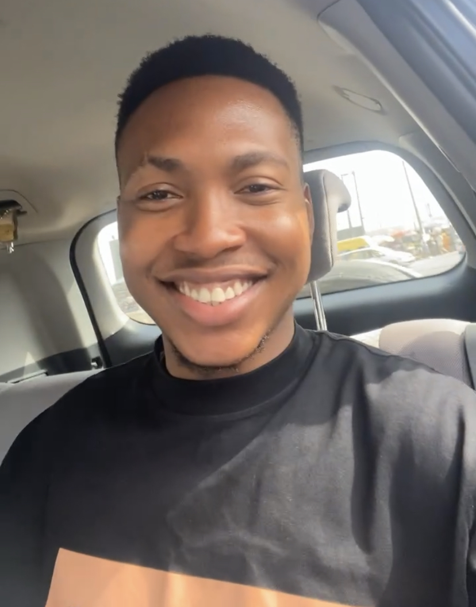

Promise Chukwuebuka Onuorah

Summary
Motivated, meticulous recent anatomy graduate with background in web development and research.
Education
- Nnamdi Azikiwe University, Awka, Anambra State (2018–2022)
2:1 in Anatomy BSc (Hons)
- Kinsol High School, Agodo Egbe, Lagos State (2009–2015)
West African Senior School Certificate Examination (WASSCE)
Work Experience
Skills
- Leadership skills ⭐️⭐️⭐️⭐️⭐️
- Organizational Skills ⭐️⭐️⭐️⭐️⭐️
- Customer Service ⭐️⭐️⭐️⭐️⭐️
- Problem solving skills ⭐️⭐️⭐️⭐️
- Microsoft Office Suite: ⭐️⭐️⭐️
Awards and Certifications
- Best Graduating Student – Department of Anatomy, Nnamdi Azikiwe University, Awka (December 2023)
- President – Anatomical Students' Society of Nigeria, Nnamdi Azikiwe University, Nnewi Campus (October 2023)
- Interact Coordinator – Rotaract Club of Nnamdi Azikiwe University Teaching Hospital, Nnewi (July 2023)
- Public Relations Officer – National Union of Anambra State Students, College of Health Sciences Nnamdi Azikiwe University, Nnewi Campus (July, 2023)
Other
© Promise Chukwuebuka Onuorah. All rights reserved.